Cara Menanam Padi yang Benar
Panduan lengkap mulai dari pemilihan bibit, pengolahan lahan, hingga masa panen padi organik.
SelengkapnyaHasil pertanian organik terbaik langsung dari sawah keluarga kami ke meja makan Anda. Kami mengelola lahan secara turun-temurun dengan penuh cinta dan dedikasi.
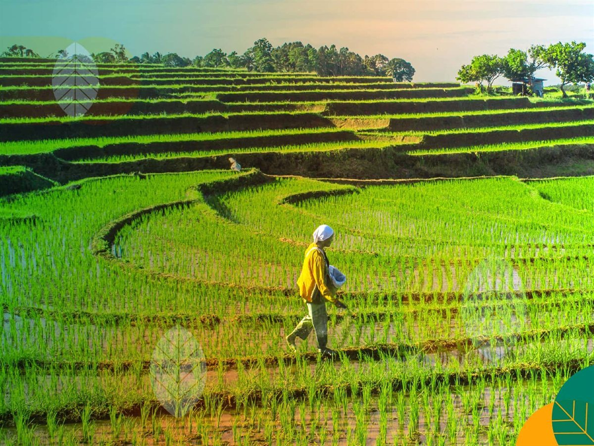
Kami adalah keluarga petani yang telah mengelola lahan pertanian secara turun-temurun selama lebih dari 25 tahun. Bermula dari kakek kami yang pertama kali membuka lahan pertanian di desa ini, kini kami melanjutkan tradisi dengan menggabungkan metode tradisional dan teknologi modern.
Setiap tanaman yang kami tanam dirawat dengan penuh kasih sayang tanpa menggunakan bahan kimia berbahaya. Kami percaya bahwa hasil pertanian yang baik dimulai dari tanah yang sehat dan petani yang peduli.
Berbagai jenis sayuran dan padi organik yang kami tanam dengan penuh perhatian.
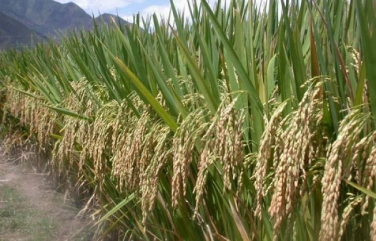
Tanaman padi unggul dengan varietas IR64, menghasilkan beras berkualitas tinggi dan pulen.
Jagung manis lokal yang cocok untuk dimakan langsung atau diolah menjadi berbagai produk.
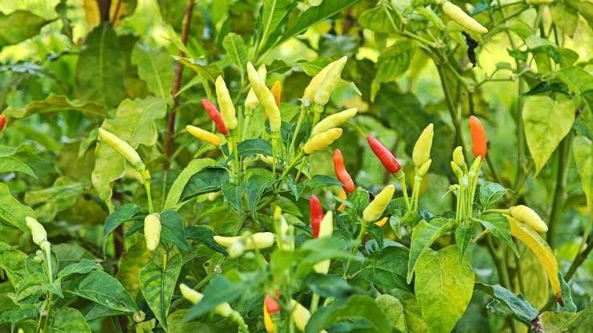
Cabai merah keriting dan cabai rawit dengan rasa pedas khas yang menjadi favorit.
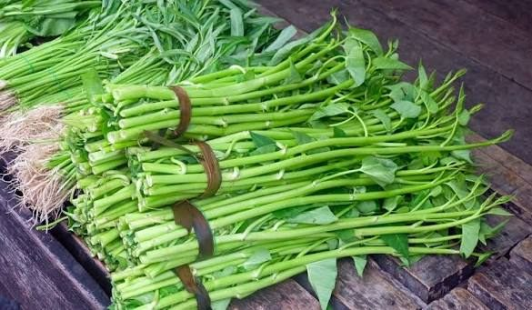
Kangkung air segar yang cepat tumbuh dan cocok untuk berbagai masakan rumahan.
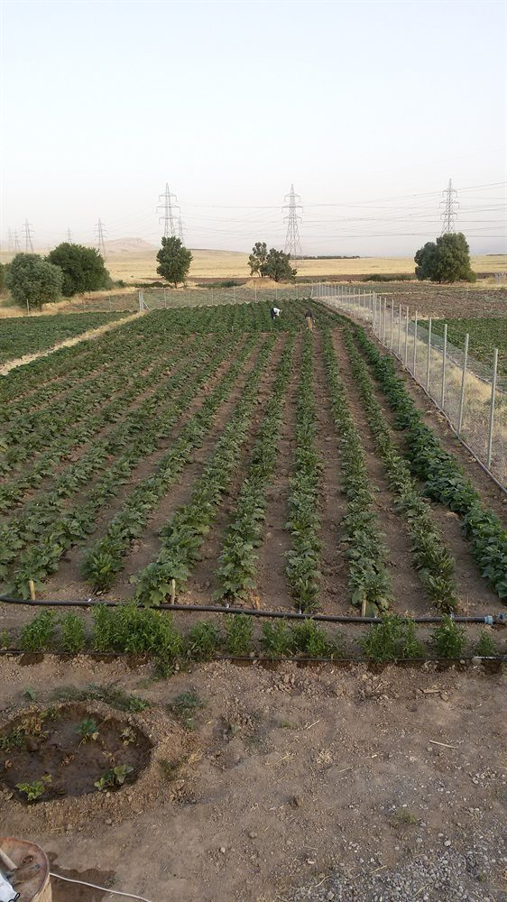
Terong ungu lokal dengan tekstur lembut, cocok untuk balado, goreng, atau bakar.
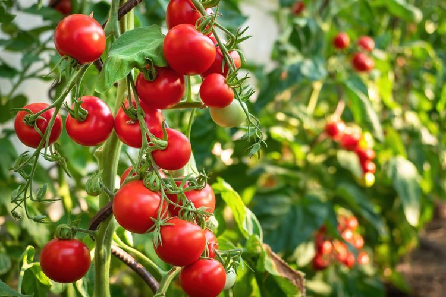
Tomat merah segar kaya vitamin C, ideal untuk saus, salad, atau dimakan segar.
Rencana penanaman sepanjang tahun untuk memastikan pasokan stabil.
| Bulan | Tanaman | Status |
|---|---|---|
| Januari | Padi, Cabai | Sedang Tumbuh |
| Februari | Padi, Jagung | Sedang Tumbuh |
| Maret | Tomat, Kangkung | Mulai Tanam |
| April | Padi, Cabai | Sedang Panen |
| Mei | Terong, Kangkung | Sedang Tumbuh |
| Juni | Jagung, Tomat | Sedang Tumbuh |
| Juli | Terong, Cabai | Mulai Tanam |
| Agustus | Tomat, Kangkung | Sedang Tumbuh |
| September | Cabai, Kangkung | Sedang Tumbuh |
| Oktober | Padi, Jagung | Mulai Tanam |
| November | Padi, Terong | Sedang Tumbuh |
| Desember | Tomat, Jagung | Sedang Panen |
Pencapaian hasil panen pertanian keluarga dari tahun ke tahun.
Total Lahan (Hektar)
Jenis Tanaman
Total Panen (Ton)
Tahun Bertani
Dokumentasi kegiatan pertanian keluarga dari sawah hingga panen.
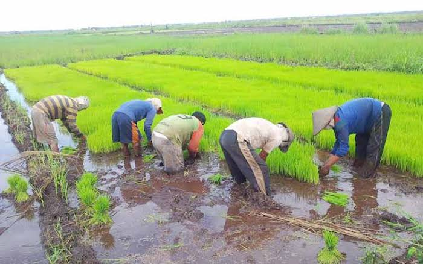
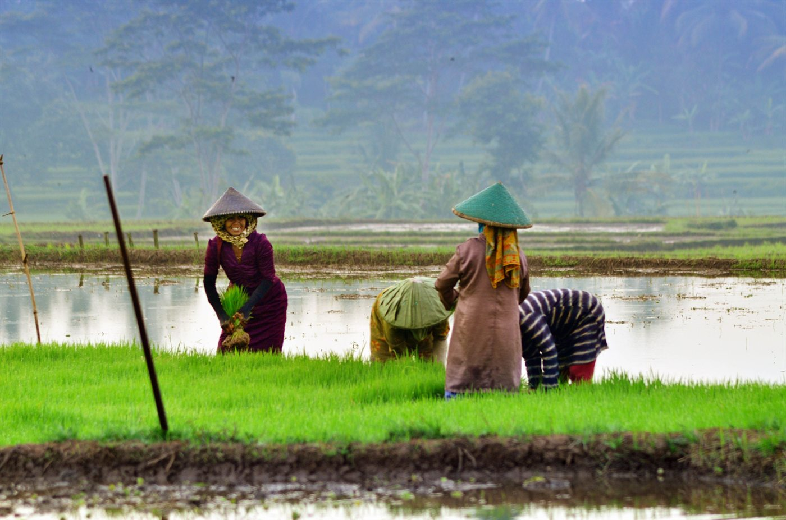
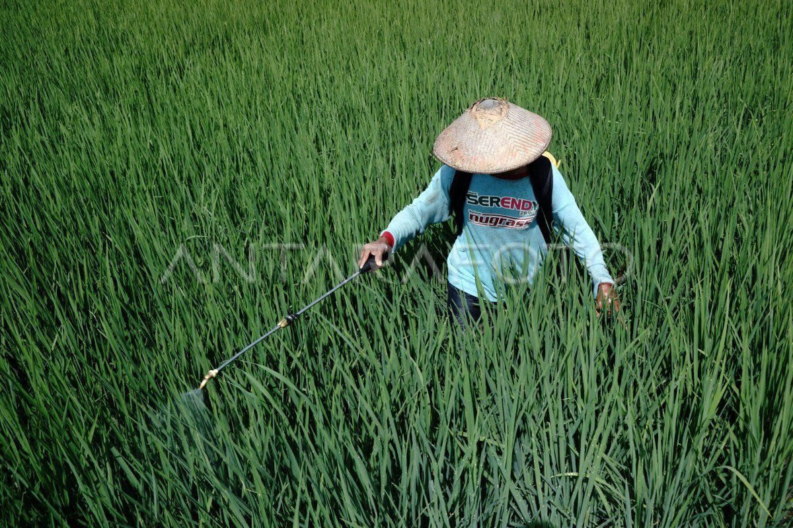
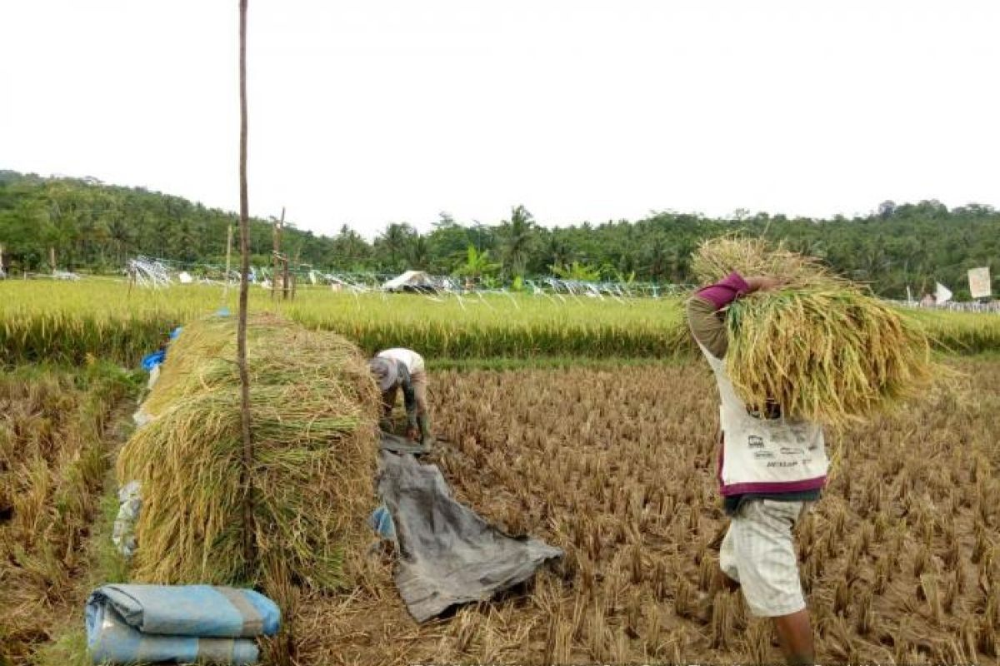
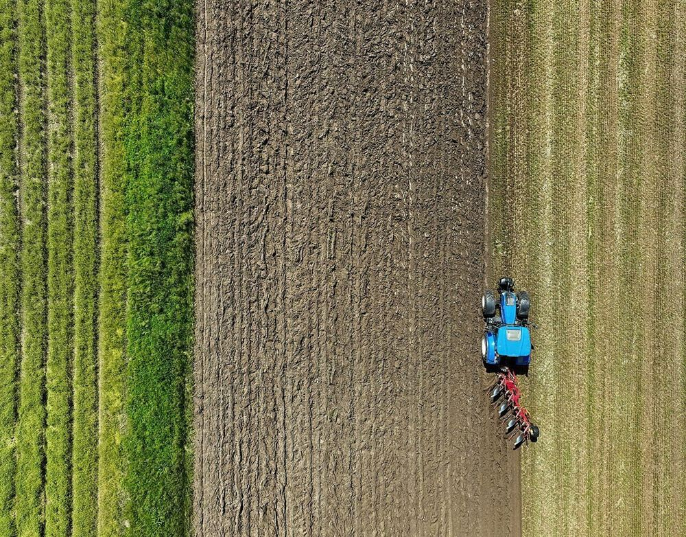
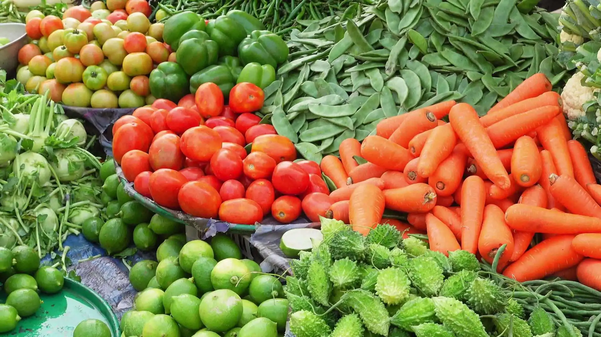
Tips dan trik pertanian dari pengalaman bertahun-tahun kami.
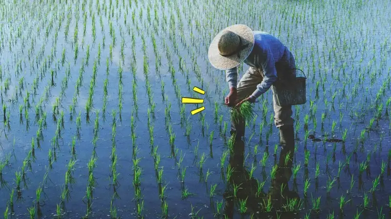
15 Jan 2025Panduan lengkap mulai dari pemilihan bibit, pengolahan lahan, hingga masa panen padi organik.
Selengkapnya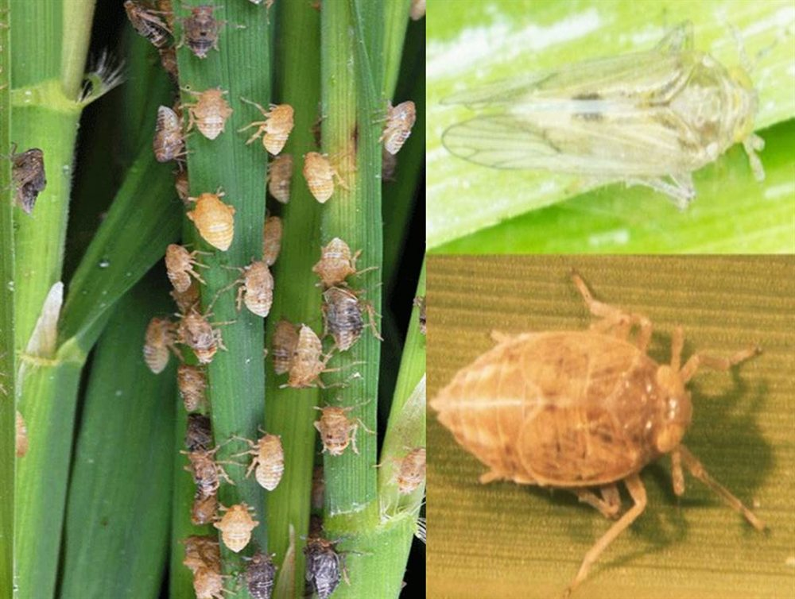
28 Feb 2025Metode pengendalian hama tanaman menggunakan bahan alami tanpa pestisida kimia berbahaya.
Selengkapnya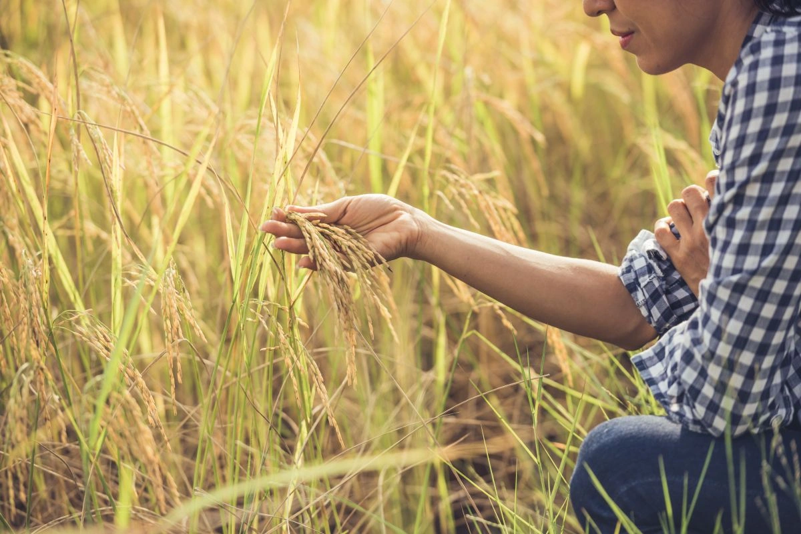
10 Mar 2025Cara memilih bibit tanaman yang unggul untuk hasil panen yang maksimal dan tahan penyakit.
SelengkapnyaPendapat dari pelanggan setia dan mitra kerja kami.
Jangan ragu untuk menghubungi kami. Kami siap membantu Anda!
Bandungrejo RT 05 RW 02, Karanganyar, Demak
Senin - Sabtu: 07.00 - 17.00 WIB